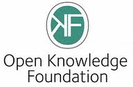
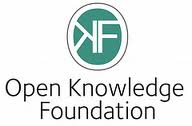

The working group on Collection of Digital Data of the European Research Network NeDiMAH (Network for Digital Methods in the Arts and Humanities, http://www.nedimah.eu) is organising an Experts’ Seminar in conjunction with the 8th International Digital Curation Conference (http://www.dcc.ac.uk/events/idcc13) in Amsterdam on 17 January 2013.
The working group on Collection of Digital Data of the European Research Network NeDiMAH (Network for Digital Methods in the Arts and Humanities, http://www.nedimah.eu) is organising an Experts’ Seminar in conjunction with the 8th International Digital Curation Conference (http://www.dcc.ac.uk/events/idcc13) in Amsterdam on 17 January 2013.
As the use of digital data has become a common practice, the multiplication of collections of data and the resources invested in their set-up and maintenance raise questions about access and, more generally, their life cycle beyond the context in which they were created.
This workshop will focus on access and re-use of digital data in the arts and humanities. Together with leading experts, we will address scientific considerations (how data are constructed), technical considerations (how data formats and tools promote interoperability) and legal considerations (how property and licences can facilitate data reuse).
- How do we ensure findability of data?
- How do we ensure trust and quality of data?
- How do we ensure interoperability of data?
- How do we ensure preservation of data?
Workshop proposals of 500 words and a short 300 words author bio should be sent in PDF format to nedimah@ens-lyon.fr by 9 November 2012. Authors will be notified of paper acceptance by 23 November 2012. Selected authors will be invited to submit a paper to be published in a scientific book and/or a scientific journal special issue.
A limited amount of travel grants are available for workshop participants coming from one of the NeDiMAH project contributing countries (listed in http://www.nedimah.eu). For further information please contact Jean-Philippe Magué : jean-philippe.mague at ens-lyon.fr
Contact workshop chair: Jean-Philippe Magué : jean-philippe.mague at ens-lyon.fr
For more information on this workshop please visit: http://www.dcc.ac.uk/events/idcc13/workshops
 Title: Humanities Hack
Title: Humanities Hack In collaboration with our Danish partner
In collaboration with our Danish partner  Visiting fellowships in Computational Humanities, based at the eHumanities Group, Royal Netherlands Academy of Arts and Sciences (KNAW) (
Visiting fellowships in Computational Humanities, based at the eHumanities Group, Royal Netherlands Academy of Arts and Sciences (KNAW) (